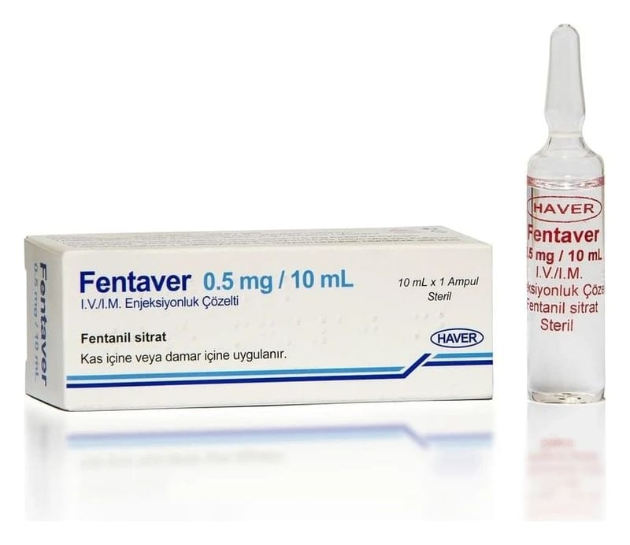

Fentaver 0,5 mg/10 ml IV/IM Enjeksiyonluk Çözelti, 1 Adet

Ne için kullanılır
KT · Bölüm 1• FENTAVER “opioid analjezikler” olarak adlandırılan gruptan güçlü bir ağrı kesici olan ve toplardamar ve kas içine uygulanan bir çözeltidir. FENTAVER’in güçlü ağrı kesici etkisi kısa bir süre devam eder. • 1 mL FENTAVER 0.05 miligram fentanile eşdeğer fentanil sitrat içerir. • FENTAVER 1 adet 10 mL’lik ampul içeren ambalajlarda kullanıma sunulmaktadır.
FENTAVER güçlü bir ağrı kesicidir ve ancak yetkili kişiler tarafından reçete edilmelidir / uygulanmalıdır. • FENTAVER değişik türden ameliyatlarda ortaya çıkan ağrıyı engellemek ya da gidermek için kullanılır. FENTAVER şu tür ameliyatlarda kullanılabilmektedir: • Operasyonun gerçekleştirildiği gün taburcu olunabilen kısa süreli ameliyatlar • Birkaç gün hastanede kalmanızı gerektirebilen daha uzun süreli ameliyatlar • FENTAVER yüksek dozlarında, ventilatöre bağlıysanız (yani size yapay solunum uygulanıyorsa) doğal solunum hızınızı azaltmak amacıyla da kullanılır. Bu şekilde büyük ameliyatlarda nöroleptik adı verilen sizi uyutan veya sersemliğe neden olan bir sedatif ilaçla birlikte sizi uyutmak amacıyla kullanılır.